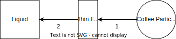

Engineering a Cup of Coffee
While making coffee one day, I started thinking about how the coffee making process is both a perfect representation of the sorts of systems chemical engineers work on every day and also a weird edge case unlike most of the unit operations in the standard repertoire of process engineering.
Making coffee involves heat, mass, and momentum transfer across multiple phases – pretty standard stuff for undergraduate chemical engineering curricula. On the other hand, while industrial scale leaching operations are generally designed for maximum efficiency – removing the most amount of a substance with the least amount of solvent, energy, etc. – coffee makers are specifically designed to avoid that outcome. A saturated cup of coffee would be strong, harsh, and undrinkable. Coffee making, as a unit op, aims at a managed inefficiency, which makes for an interesting design case I am not the first person to think of this: using coffee as a basis for exploring engineering concepts is the entire premise of this book. From the reviews it sounds like it is, essentially, a lab manual for exploring chemical engineering concepts using coffee..
Extraction and the Coffee Control Chart
I claimed that making coffee is, in a sense, a deliberately inefficient process. By this I mean the goal is not to maximize extraction – defined as the mass of solids dissolved in the final cup of coffee relative to the starting mass of coffee grounds – but instead to target some middle ground. This is largely because extraction is an imperfect measure of what we actually want. Coffee releases a whole slew of flavour compounds and a good cup of coffee is a balance of all of these. However we have both limited variables to control and limited knowledge of that final composition. Even simply measuring the total dissolved solids (TDS) with a refractometer puts one well into the stratospheric heights of coffee nerd-dom. Trying to monitor all of the relevant flavour compounds would require something like a quarter-million dollar GC-MS, well out of the reach of most coffee obsessives.
So extraction is really the best we have, as far as quantitative measures go, with the giant caveat that coffee with the same extraction, from the same beans, can taste quite different depending on the brew method. Using an indirect measurement for the actual process variable of interest is not too different from how a lot of unit operations are controlled, distillation, for example, often uses temperature as a proxy for the composition.
The standard way of thinking about coffee extraction starts with Lockhart’s coffee control chart, this plots the concentration of solids (TDS) against total extraction. The diagonal lines represent a given dose of coffee (I typically brew 55g/L with my V60, which puts me pretty near the sweet spot). A given brew moves along the diagonal line for the given dose, moving from the bottom left to the upper right as the brew proceeds. The goal is to stop the brew once the extraction and strength (concentration) have reached the optimal level
{% capture footnote-2 %} For a given dose of coffee, the concentration and extraction are directly proportional to one another.
\[ \mathrm{Dose} = D = { m_{beans} \over V_{water} } \approx { m_{beans} \over V_{cup} } \]
\[ \mathrm{Extraction} = E = { m_{cup} \over m_{beans} } = { { c_{cup} V_{cup} } \over m_{beans} } \]
\[ c_{cup} = D \cdot E \]
where the subscript cup means the mass/volume that ends up in the final cup of coffee. This is only approximately the case as some water is absorbed into the coffee grounds. The amount of water retained in the coffee grounds can be accounted for, giving a more accurate measure of final extraction. {% endcapture %}
For industrial scale distillation, absorption, extraction, leaching, etc. the process is usually modeled as a series of equilibrium stages, and the whole point is to maximize extraction and concentration. This leads to designs for counter-current solids extractors such as a Rotocel extractor or a Bollman extractor
Extractors like this are, in fact, how one might decaffeinate coffee. In that case one does want to maximize the extraction of caffeine, and is free to adjust several parameters such as the solvent (with options such as supercritical CO2, dichloromethane, or ethyl acetate) that are otherwise pretty fixed for normal coffee making. At the end of the day a cup of coffee has to be made with water, a steaming cup of dichloromethane just won’t cut it.
Coffee makers inhabit a space where the design parameters are highly restricted. Outside of espresso, the machine has to operate at atmospheric pressure and temperatures achievable with a normal kettle. The solvent must be water. The process is likely batch or semi-batchI would love to see a fully continuous coffee maker, like the fully continuous industrial operations, and there is no reason why you couldn’t make one. Imagine going into your local coffee shop and seeing a glass fluidized bed continuously circulating grounds and hot water, that would be pretty groovy.. The extraction happens fully within the mass-transfer dominated regime, specifically avoiding reaching equilibrium (the fundamental design assumption in most industrial extractors) as that leads to over-extracted coffee.
The simplest coffee maker
Perhaps the simplest method for making coffee is to put coffee grounds and water in a vessel, add heat, and let it steep for a while. This is, for example, how Turkish coffee is made as well as qahwa, bunna, and many others. A French press and other infusion brewers are a very similar idea except that the water is also the source of heat, and the pot is left to steep without any additional heat input. That’s not the only difference, of course, they differ quite substantially in grind size, whether or not the grounds are strained out at the end, and in the addition of spices or sugar during the brew. But for the purposes of building a simple model all of these methods are vessels in which coffee steeps in hot water. There are three main process variables that impact coffee extraction, and taste, for a given set of beans: brew temperature, grind size, and brew time.
In some ways this makes these methods some of the easier ways to make good coffee. Dialing in grind size and temperature is reasonably straight forward and once set remain constant. The remaining variable, time, is relatively easy to adjust: simply wait longer.
Modeling extraction is fairly straight forward, after some basic assumptions are made: that the brew is isothermal, that the ground coffee is uniform and with constant dimensions, and that the liquid phase is well mixed. All of these assumptions are wrong to some degree, and how wrong they are will ultimately govern how useful this model is.
Brew temperature
Brew temperature is an obvious variable to change, though it has wide ranging impacts and parsing out what exactly changing the temperature does is not obvious. Firstly, the solubility of the various compounds extracted from the beans is a function of temperature and in general solubility is difficult to predict, but broadly speaking solutes are more soluble at higher temperatures. Coffee is more extractable at higher temperatures. However the coffee matrix is complex and there are more than just two phases involved: flavour compounds in the coffee will partition between the solid matrix, coffee oils, and the water at different proportions depending upon the temperature. This is perhaps what is behind the notable difference in taste between cold brew versus a hot immersion brew. Even when made with the same beans, and to the same concentration, the flavour profile of cold brew is quite differentBatali et al, Foods. 11, no. 16: 2440. That said, over the range of temperatures used to brew a French press, this may not be very importantBatali, Ristenpart, and Guinard Scientific Reports. 10: 16450.
Secondly, brew temperature impacts the rate of extraction. Generally speaking, diffusion coefficients are proportional to (absolute) temperature, $ T$ Schwartzberg, “Leaching – Organic Materials,” 558; Poling, Prausnitz, and O’Connell, The Properties of Gases and Liquids, 11.21-11.33.. At higher temperatures the various flavour compounds will diffuse more quickly through the grounds and also through the coffee, thus making the brew faster.
To make modeling extraction simpler, we assume the brew temperature is constant. This means that, whatever the relative solubilities or rate constants turn out to be, they are constant with respect to time. The only thing varying over time is the concentration of coffee solubles in water and remaining in the grounds. For something like Turkish coffee, the system is probably close to isothermal as it is continuously heated and will remain at or near the boiling point of water the entire time. For a French press this is less true, as the press will lose heat to the environment. How much heat is lost over the course of the brew is going to depend strongly upon the press and the environment it is in. My French press is a double walled stainless steel carafe like this one and likely loses much less heat than a more typical glass carafe. It is also important to consider whether or not the French press is pre-heated. If not, the brew temperature is not going to be the temperature of the kettle. The carafe has significant thermal mass, especially if it is glass, and it will absorb a lot of heat out of the water over the course of the brew (in addition to losing heat to the environment).
Suppose my French press starts off at 95°C and cools to 75°C – a sizable loss of heat – how much impact would that have on extraction rate? Since $ T$, the percent change in the rate constant is equal to the percent change in (absolute) temperature
\[ { { \Delta \mathscr{D} } \over \mathscr{D} } = { { \Delta T } \over T } \]
ΔT = 20
T = 368.15
ΔT / T = 0.054325682466385986Even over this significant loss of heat, that translates to only a 5.4% change in the rate constants. To the exacting standards of a coffee nerd that may seem like a lot, but to chemical engineer that is really not much, it justifies the isothermal assumption (at least as a first approximation).
Grind size and uniformity
Grind size is important if only for being where most of your money can get sunk when building out your home coffee set-up. A good grinder is not cheap, and a bad grinder leads to truly bad coffee. In this case what you are chasing is the ability to tune the average grind size as well as the uniformity of the size of particles produced by the grinder. A good grinder can reliably produce a consistent and suitably narrow particle size distribution.
Why does grind size matter at all? The grind size determines the available surface area of the coffee. Mass transfer from the coffee beans (grounds) to the water is proportional to the surface area of coffee exposed to water, and so changing the grind size directly impacts the rate of extraction. The direct impact of grind-size is typically quantified through the specific area, av, which is the surface area of the particle per unit volume. For a sphere this is
\[ a_v = {S \over V} = { {4 \pi b^2} \over { \frac{4}{3} \pi b^3} } = {3 \over b} \]
where b is the radius of the particle. This leads immediately to the observation that, for the same dose of coffee, a finer grind leads to larger overall surface area and thus a faster rate of extraction. It also hints at why a uniform particle size distribution is important: a smaller particle has proportionately more surface area and will experience faster extraction than a larger particle, leading to the smallest particles (the fines) being over extracted while the largest particles (the boulders) are under extracted.
Of course coffee grounds are not perfect spheres, they have a complex shape arising from the combination of cutting and brittle fracture that characterize the grinding process. The standard engineering approach is to assume that they are spheres anyways, since that is a simpler geometry to work with, and adjust for the non-sphericity with some sort of shape factor or other parameter. In the case of mass and heat transfer, typically that is the Sauter mean diameter (or Sauter mean radius), which is essentially the average diameter of the distribution of spheres that would have the same specific area as the actual particles. For an individual particle the Sauter radius is
\[ b_{s} = {3 \over a_v } \]
It is important to note, though, that the following model is developed for spheres and only works as well as the grounds can be approximated as spheres.
Mixing and rate constants
Mass transfer problems, like this one, ultimately come down to finding good rate constants. They can be measured, estimated from a correlation, or simply tabulated in a reference, but regardless the model is only as good as the rate constants. The rate constants define, to some extent, the model itself and govern one of the key brew variables: brew time.
In the case of coffee, and organic materials in general, there is a complex micro-scale geometry involving multiple phases: the solid ground itself, coffee oils, and water. The coffee will diffuse from the solid into the oils, into water in the interstitial spaces, and also out into the bulk liquid. All of these processes have potentially different rate constants. Additionally the solid phase is not structurally homogeneous, it is a complex arrangement of coffee bean cells, voids, pores and such. Building a model to incorporate all of this complexity is certainly possibleMoroney et al, Chemical Engineering Science. 137: 216-234. but the standard approach is to treat this as a two-phase problem where all of the complexity of the solid phase, the marc, and any secondary phases (e.g. coffee oils) are all averaged together into one pseudo-homogeneous solid phase and the solvent (water) forms the liquid phase. This approximation leaves us with two mass transfer rates: the diffusion through the (pseudo-homogeneous) solid phase, within the coffee particles, and the diffusion through the solvent phase, the water outside of the coffee particles. At the interface, the solute leaves the solid phase and enters the liquid phase.
For organic material with hard cell walls the relative diffusivity of the solid phase to the liquid phase generally falls along the range $ = 0.1-0.2$ Schwartzberg, “Leaching – Organic Materials,” 557., this allows us to estimate the (effective) diffusivity within the solid based on measured diffusivities in liquid water. It also tells us that diffusion through the solid is 5-10× slower than in the liquid phase and so, depending upon the geometry of the problem, diffusion through the solid phase may be the governing rate.
Diffusion through the liquid phase is complicated by mixing. The diffusivity used above is the diffusivity in quiescent liquid water. In practice, in the brew vessel, the liquid will be moving and convective mass transfer will be very significant. Usually for mass transfer problems this is all rolled up into a mass transfer coefficient h which combines all of the flow complexity and geometry of the problem into a single coefficient. This is then typically estimated using correlations for the Sherwood number.
The interface between the solid and liquid phase introduces a complication as there is some partitioning between the phases happening at the interface. If there wasn’t coffee couldn’t be made. A critical piece of the model is assuming a relationship between the concentration immediately on the solid side of the interface and the concentration immediately on the liquid side of the interface. For organic leaching it is typical to assume linear equilibrium with an equilibrium distribution coefficient
\[ K = \frac{ q^{*} }{ c^{*} } \]
Where q is the concentration of solute in the solid phase and c is the concentration of solute in the liquid phase. This is equivalent to assuming that there are two first order processes happening
\[ \mathrm{coffee}_{s} \xrightarrow{k_1} \mathrm{coffee}_{l} \]
\[ \mathrm{coffee}_{l} \xrightarrow{k_2} \mathrm{coffee}_{s} \]
At equilibrium the rates of these two processes are equal
\[ k_1 q^{*} = k_2 c^{*} \Leftrightarrow \frac{k_2}{k_1} = \frac{ q^{*} }{ c^{*} } = {K} \]
Typically one assumes that at the interface, in the infintesimally thin slice of liquid on one side and the infintesimally thin slice of solid on the other, the solute is always at equilibrium (this is not the same as assuming the system is at equilibrium)
An example brew
At this point we can start defining what our specific brew is going to be: roast, grind size, dose, and water temperature. From this we can work to estimate the necessary parameters, such as the equilibrium constant, solid and liquid phase diffusivities. To an extent, these parameters then govern what specific model is used to model the brew.
# properties of the coffee grounds
# equilibrium parameters
# Moroney et al. 2015
q_sat = 118.95 # kg/m³
c_sat = 212.4 # kg/m³
K = q_sat/c_sat
# effective diffusivity
# Moroney et al. 2015; Schwartzberg 1987, 557
𝒟ₗ = 2.2e-9 # m²/s
𝒟ₛ = 0.1*𝒟ₗ
# particle size
# Moroney et al. 2015
b = 569.45e-6 # m
# density, medium roast
# Rodrigues et al. 2002, 8
ρₛ = 314.0 # kg/m³
# dose
# assumed, 22.5g in 500mL
mₛ = 0.0225 # kg
Vₛ = mₛ/ρₛ # m³
Vₗ = 500e-6 # m³# properties of the water
# density
# Poling et al. 2007, 2-103
MW = 18.015 #kg/kmol
function ρₗ(T)
τ = 1 - T/647.096
mol_dens = 17.863 + 58.606*τ^0.35 - 95.396*τ^(2/3) + 213.89*τ - 141.26*τ^(4/3)
return mol_dens*MW
end
# viscosity
# Poling et al. 2007, 2-432
μₗ(T) = exp(-52.843 + 3703.6/T + 5.866*log(T) - 5.879e-29*T^10)
νₗ(T) = μₗ(T)/ρₗ(T)
# brew temperature
# assumed, 95°C
Tₗ = 95+273.15 #K
# initial concentration
c₀ = 0.0 # kg/m³
# final (max) concentration
c_max = min(q_sat*Vₛ/Vₗ + c₀, c_sat) # kg/m³These are a lot of parameters and I think it is good practice to think about how to organize them into a struct. In this case I define an InfusionBrew struct to store all of the parameters necessary for defining the brew recipe for an infusion brewer.
struct InfusionBrew{T}
K::T
q_max::T
c_max::T
Vₗ::T
Vₛ::T
mₛ::T
𝒟ₛ::T
𝒟ₗ::T
b::T
end
brew = InfusionBrew(K,q_sat,c_max,Vₗ,Vₛ,mₛ,𝒟ₛ,𝒟ₗ,b);A mass transfer model of coffee brewing
Pulling together all of the information we have collected about coffee we can build a partial differential equation to describe the brewing process, making the following assumptions:
- The system is isothermal with brew temperature Tl
- Coffee grounds are spherical and have constant radius b
- The coffee matrix is a pseudo-homogeneous solid, diffusion through the solid follows Fick’s second law with diffusivity \(\mathscr{D}_s\) and diffusion is only relevant in the radial direction r
- The liquid phase is well mixed, i.e. the bulk concentration c is spatially homogeneous and is only a function of time
- Mass transfer into the liquid phase occurs through a thin film with a mass transfer coefficient h
- At the interface between the thin film and the solid coffee, the concentration of solubles is in equilibrium with equilibrium constant K
We can visualize this set-up with three “phases”, the bulk liquid, a thin film around the coffee particle, and the pseudo-homogeneous solid coffee particle itself. Coffee is extracted from the particles into the thin film and from the thin film into the bulk liquid.

There are two rates important processes governing the extraction of coffee:
- Diffusion across the interface into the thin film, governed by Fick’s first law
- Transfer from the thin film into the bulk liquid
Starting with (1) the mass flux into the thin film is given by Fick’s first law (in spherical coordinates)
\[ J_1 = - \mathscr{D}_s \left( { \partial q } \over { \partial r} \right)_{r=b} \]
Of course the concentration in the solid, q, is a function of time (as more is extracted, there less left behind), which is given by Fick’s second law (in spherical coordinates)
\[ { {\partial q} \over {\partial t} } = \frac{1}{r^2} { \partial \over {\partial r} } \left( r^2 \mathscr{D}_s { {\partial q} \over {\partial r} } \right) \]
Turning to (2) the mass flux from the thin film into the bulk liquid is given by
\[ J_2 = - h \left( c - c_s \right) \]
Where c is the concentration in the bulk liquid and cs is the concentration at the surface.
The change in concentration in the bulk liquid with respect to time can also be written in terms of a mass balance on the liquid phase:
\[ V_l { { \partial c} \over {\partial t} } = a_v V_s J_2 = \frac{3}{b} V_s J_2 \]
\[ { { \partial c} \over {\partial t} } = \frac{3}{b} \frac{V_s}{V_l} J_2 \]
The solution to this partial differential equation depends upon which of these mass transfer processes, (1) or (2), is dominant.
The dominant rate
The standard approach to solving this problem is to look at the limiting cases, where the Biot number is either very large or very smallSeader, Henley and Roper, Separation Process Principles, 663.
- Bi < 0.001 : the mass transfer through the film dominates, a simple exponential model is appropriate
- 0.001 < Bi < 200 : use an intermediate methodThe intermediate solution is not given in Seader, only a reference: Schwartzberg, Henry G. and R. Y. Chao. 1982. “Solute Diffusivities in Leaching Processes.” Food Technology. 36, no. 2: 73-86, which has not been digitized and is not available from my local library, so I have no idea what it says ¯\_(ツ)_/¯
- Bi > 200 : the mass transfer through the coffee particles dominates, the more complicated solution from Carslaw and Jaeger is best
I will argue in a very hand-wavy way that the Biot number for mass transfer is likely to be large, and so the model from Carslaw and JaegerCarslaw and Jaeger, Conduction of Heat in Solids, 240-241. is the probably the best model. First let’s start with Biot number for mass transfer, which for this situation isSeader, Henley and Roper, Separation Process Principles, 663.
\[ \mathrm{Bi} = { {h b} \over {K \mathscr{D}_s} } = {\mathscr{D}_l \over \mathscr{D}_s} { \mathrm{Sh} \over K }\]
Where Sh is the Sherwood number, defined as
\[ \mathrm{Sh} = { {h b} \over \mathscr{D}_l } \]
Defining the Biot number in terms of the Sherwood number might, at first glance, not seem tremendously useful. However, if we suppose the Froessling equationHottel et al, “Heat and Mass Transfer,” 5-69. for flow past a single sphere applies
\[ \mathrm{Sh} = 2 + 0.552 \mathrm{Re}^{1/2} \mathrm{Sc}^{1/3} \]
with Re the Reynold’s number and Sc the Schmidt number, then we have a correlation for the Biot number as a function of the Reynold’s number.
\[ \mathrm{Bi} = {\mathscr{D}_l \over \mathscr{D}_s} { 1 \over K } \left( 2 + 0.552 \mathrm{Re}^{1/2} \mathrm{Sc}^{1/3} \right) \]
\[ \mathrm{Bi} = { 20 \over K } + { 5.52 \over K } \mathrm{Re}^{1/2} \mathrm{Sc}^{1/3} \]
Where \({\mathscr{D}_s \over \mathscr{D}_l}\) = 0.1 is assumed from SchwartzbergSchwartzberg, “Leaching – Organic Materials,” 557.. The Schmidt number, Sc, and equilibrium constant, K, can be calculated
Sc = νₗ(Tₗ) / 𝒟ₗ = 139.98370415887905
K = q_sat / c_sat = 0.5600282485875706
Bi = 35.7124842370744 + 51.178588534736114 √ReUnder this model, any flow with Re > 10.3 corresponds to Bi > 200, which occurs when the velocity is
Re = 10.3
v = Re*νₗ(Tₗ)/b0.005570341094459917that is 5.6mm/s, a velocity so small that it may be achieved through the natural convection occurring within a French press (and especially so in the case of something heated from below like Turkish coffee), but is certainly the case when the French press is stirred.
Regardless it is unlikely that \(\mathrm{Bi}<0.001\) and thus the simple exponential model is probably not a good fit, we turn instead to the model from Carslaw and Jaeger.
Boundary conditions
In the above I casually disregarded boundary conditions, focusing instead on refining the model. Before we move forward we should take a moment to clarify what the boundary conditions are.
First off the coffee starts with a set of initial concentrations q0 and c0, usually these would be the max concentration in the solid phase and zero respectively but they don’t have to be. By disregarding the transfer through the thin film we impose another boundary condition: that at r = b the solid-phase concentration is at equilibrium with the concentration in the bulk liquid qr=b = K c
- t = 0 : q = q0 and c = c0
- r = b : q = K c
- r = 0 : q is finite
The Carslaw and Jaeger model
It might, at first glance, appear that I have lost the thread, Carslaw and Jaeger is a book on heat transfer, this is a mass transfer problem. This is an example of the unreasonable effectiveness of treating transport phenomena as a unified subject. By putting the PDE into dimensionless form we find that the PDE for the equivalent heat transfer problem (a solid sphere cooling in a liquid) has already been solved and we can just use that answer.
First step, to put the PDE in dimensionless form we make the substitutions:
\[ \xi = {r \over b} \]
\[ \tau = { {\mathscr{D}_s t} \over b^2} \]
\[ u = { { q - q^{*} } \over { q_0 - q^{*} } }\]
\[ u_f = { {c - c^{*} } \over { c_0 - c^{*} } }\]
After which the PDE becomes
\[ { {\partial u} \over {\partial \tau} } = \frac{1}{\xi^2} { \partial \over {\partial \xi} } \left( \xi^2 {\partial \over {\partial \xi} } \right) \]
With boundary conditions
- τ = 0 : u = 0
- ξ = 1 : u = uf
- ξ = 0 : u is finite
And the mass transfer into the liquid bulk becomes
\[ { {\partial u_f} \over {\partial \tau} } = -\frac{3}{\alpha} \left. { {\partial u} \over {\partial \xi} } \right|_{\xi=1} \]
With $ = { V_l } $ and boundary condition
- τ = 0 : uf = 1
This is the equivalent PDE (in dimensionless form) to the heat transfer case for a hot solid sphere cooling in a well mixed fluidCarslaw and Jaeger, Conduction of Heat in Solids, 240-241; Bird, Stewart and Lightfoot, Transport Phenomena, 379-381., with the solution
\[ u_f = 6α (α+1) \sum_{k=1}^{\infty} { \exp(-τ x_k^2 )\over { 9(α+1) + (α x_k)^2 } } \]
Where the xk s are the roots of the equation
\[ \tan(x) = { {3 x} \over { 3 + \alpha x^2 } } \]
(the particular form shown here comes from Schwartzberg)
The first problem, when actually using this solution, is generating the roots of the equation. The original equation has a repeated singularity and, in my experience, off-the-shelf root finding algorithms have trouble with that and will find spurious zeros in the vicinity of the singularities.
A better approach is to re-write it in a different way
\[ \tan(x) = { \sin(x) \over \cos(x) } \]
\[ \tan(x) - { {3 x} \over { 3 + \alpha x^2 } } = 0 \Leftrightarrow \left( 3 + \alpha x^2 \right) \sin(x) - 3 x \cos(x) = 0 \]
This latter form is nice and continuous, with no singularities.
using IntervalRootFinding
using Roots
α = Vₗ/(K*Vₛ)
f(x) = tan(x) - 3x/(3+α*x^2)
g(x) = (3 + α*x^2)*sin(x) - 3x*cos(x)
# find the first 5 roots
k=5
xk = find_zeros(g, 0, (k+1/2)*π)6-element Vector{Float64}:
0.0
3.214656575481129
6.321030394109289
9.45018248676156
12.585470558898335
15.723260568418107Since α is fixed for a given problem we will end up using the same roots over and over again, so it would be nice to pre-calculate those roots. However, at this point, we don’t know how many we will need to get a reasonable answer. So my approach is to calculate as many as we need dynamically: if we need more roots than have already been calculated, calculate those ones and append them to the list of already calculated roots.
function getroots(n)
if n ≤ length(xk)
return xk[2:n]
else
new_roots = find_zeros(x -> g(x), xk[end], (n+1/2)*π)
append!(xk, new_roots)
return xk[2:end]
end
endThe standard approach to calculating an infinite series is to use Richardson extrapolation as this accelerates convergence and allows for an error estimate.
using Richardson:extrapolate
function u_f(τ)
val, err = extrapolate(1, x0=Inf) do N
xk = getroots(Int(N))
6α*(α+1)*sum( exp.(-τ.*(xk.^2))./((9*(α+1)).+(α.*xk).^2) )
end
return val
endNow we can put together a bulk concentration function
function c(t)
τ = (𝒟ₛ*t)/b^2
c = (c₀ - c_max)*u_f(τ) + c_max
return c
endExtraction is simply concentration over dose
extraction(t) = c(t)*Vₗ/mₛPackaging the final result
At this point we have enough to put together a struct to contain the parameters needed for the Carslaw and Jaeger model
struct CarslawSolution{T}
α::T
τ₁::T
xk::Vector{T}
ib::InfusionBrew{T}
end
function CarslawSolution(ib::InfusionBrew)
α = ib.Vₗ/(ib.K*ib.Vₛ)
τ₁ = ib.𝒟ₛ/ib.b^2
xk = find_zeros( x -> (3 + α*x^2)*sin(x) - 3x*cos(x) , 0, (10.5)*π)
return CarslawSolution(α, τ₁, xk, ib)
endand update our code to add some methods for calculating the concentration and extraction based on a Carslaw and Jaeger model for the infusion brew.
function getroots(n, model::CarslawSolution)
if n ≤ length(model.xk)
return model.xk[2:n]
else
new_roots = find_zeros(x -> (3 + model.α*x^2)*sin(x) - 3x*cos(x),
model.xk[end], (n+1/2)*π)
append!(model.xk, new_roots)
return model.xk[2:end]
end
end
function c(t, model::CarslawSolution)
τ = model.τ₁*t
α = model.α
u_f, err = extrapolate(1, x0=Inf) do N
xk = getroots(Int(N), model)
6α*(α+1)*sum( exp.(-τ.*(xk.^2))./((9*(α+1)).+(α.*xk).^2) )
end
c = (c₀ - c_max)*u_f + c_max
return c
end
extraction(t, model::CarslawSolution) = c(t, model)*model.ib.Vₗ/model.ib.mₛ
sol = CarslawSolution(brew);The advantage of packaging code like this is that is now easy to explore the impact of changes to individual parameters, for example below is the impact that changing grind size has on the extraction curve. It follows our general intuition that smaller grind sizes extract faster. It also shows a major weakness of this model: there is only one particle size in the model, which is average over the range of actual particle sizes. This model works well if the grind is quite uniform, however if there is a wide range of particle sizes the actual coffee will be a mix of over extracted coffee (from the small particles) and under extracted coffee (from the large particles).
Final thoughts
I think this shows that making coffee can be an interesting exploration of how one would go about building a mass-transfer model for an extraction operation, and going through the stages of simplifying the model by, for example, assuming simpler geometries, limiting cases and such. I think you could also take this as an example of how very often chasing down appropriate model parameters is the limiting step when building an engineering model (at least in chemical engineering). Often the exact chemical process that you want to model has not been explored, experimentally, over the entire range of your process variables (if at all).
The next obvious step with this model is to build some datasets and fit some of these models to actual observed extractions. This could be a jumping off point for exploring how changes in different parameters impact the overall extraction or required brew time.
For a complete listing of code used to generate data and figures, please see the corresponding julia notebook {: .notice–info}
References
- Batali, Mackenzie E., Lik Xian Lim, Jiexin Liang, Sara E. Yeager, Ashley N. Thompson, Juliet Han, William D. Ristenpart, and Jean-Xavier Guinard. “Sensory Analysis of Full Immersion Coffee: Cold Brew Is More Floral, and Less Bitter, Sour, and Rubbery Than Hot Brew.” Foods. 11, no. 16 (2022): 2440 doi:10.3390/foods11162440 ResearchGate
- Batali, Mackenzie E., William D. Ristenpart and Jean‑Xavier Guinard. “Brew temperature, at fixed brew strength and extraction, has little impact on the sensory profile of drip brew coffee.” Scientific Reports. 10 (2020): 16450 doi:10.1038/s41598-020-73341-4 ResearchGate
- Bird, R. Byron, Warren E. Stewart, Edwin N. Lightfoot. Transport Phenomena. 2nd ed. Hoboken: John Wiley & Sons, 2007. archive
- Carslaw, Horatio S. and John C. Jaeger. Conduction of Heat in Solids. 2nd ed. London: Oxford University Press, 1959. archive
- Hottel, Hoyt C., James J. Noble, Adel F. Sarofim, Geoffrey D. Silcox, Phillip C. Wankat, Kent S. Knaebel. “Heat and Mass Transfer” in Perry’s Chemical Engineers’ Handbook, 8th ed. Edited by Don W. Green, New York: McGraw Hill, 2008.
- Moroney, Kevin M., William T. Lee, Stephen B. G. O’Brien, Freek Suijver and Johan Marra. “Modelling of coffee extraction during brewing using multiscale methods: An experimentally validated model.” Chemical Engineering Science. 137 (2015): 216-234 doi:10.1016/j.ces.2015.06.003 ResearchGate
- Poling, Bruce E., John M. Prausnitz and John P. O’Connell. The Properties of Gases and Liquids. 5th ed. New York: McGraw Hill, 2001.
- Poling, Bruce E., George H. Thomson, Daniel G. Friend, Richard L. Rowley and W. Vincent Wilding. “Physical and Chemical Data” in Perry’s Chemical Engineers’ Handbook. 8th ed. Edited by Don W. Green, New York: McGraw Hill, 2007.
- Rodrigues, Melissa A. A., Maria Lúcia A. Borges, Adriana S. Franca, Leandro S. Oliveira and Paulo C. Corrêa. “Evaluation of Physical Properties of Coffee During Roasting.” Agricultural Engineering International: the CIGR Journal of Scientific Research and Development. V (2003) ResearchGate
- Schwartzberg, Henry G. “Leaching – Organic Materials” in Handbook of Seperation Process Technology, Edited by Ronald W. Rousseau, Hoboken: John Wiley & Sons, 1987.
- Seader, J. D., Ernest J. Henley and D. Keith Roper. Separation Process Principles. 3rd ed. Hoboken: John Wiley & Sons, 2011. archive